A paid processing service
You hand over wet organic waste, and Lokalola processes it. This is the main income. Pricing has not been set.
Managed locally, for greater energy!
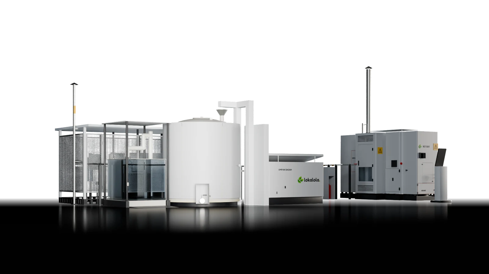
Lokalola is designed to put it back in the right one: a facility we plan to run ourselves at the edge of a city, turning food waste from food businesses and dry biomass from agribusinesses into biogas and char. First pilot target: 35 kg food waste per operating day and 15 kg dry chips per day on average.
Machine images are design renders. Other photos and videos are stock illustrations.
Every food business produces waste in the same spot, every day.
Lokalola plans to process it for them, at one facility we run ourselves.
Share of food waste: SIPSN, Ministry of Environment, 2024 data, announced by the Minister of Environment on 15 March 2025. Figures shift between releases because the number of reporting regions changes. Source: Antara
Lokalola plans to run the facility itself, at the edge of a city, between food businesses and agribusinesses. Our team operates the equipment. Suppliers hand over the waste.
You hand over wet organic waste, and Lokalola processes it. This is the main income. Pricing has not been set.
You hand over dry organic waste. One third of all the biochar produced goes back to agribusiness suppliers. How it is divided among suppliers, and whether the service carries a fee, has not been set.
We keep the other two thirds of the biochar to sell. Its quality has not been tested, and buyers have not been chosen.
Biochar is the char the retort produces. The facility does not exist yet. The city, the site, and who transports each material have not been decided.
Food waste goes in at one end, char comes out at the other. The color of the beads in the pipes shows what is flowing.
Flow summary: 35 kilograms of food waste per day (target) is sorted, mixed with water, and lifted into an unheated 5,000 liter digester. Bacteria break it down into biogas, and the leftover liquid (digestate) flows into an IBC container. The biogas is filtered and stored in a 2.5 cubic meter gas bag. From the bag, biogas lights and preheats the retort kiln at start-up, then only keeps a small pilot flame. Dry chips (dry biomass cut to 20 mm or smaller), 15 kilograms per day (target), from agribusinesses, enter through a hopper, and once hot, vapor from the chips is designed to keep it hot (not yet tested). Char leaves into a closed bin. Leftover gas can be sent to a burner or a flare at the facility (optional; subject to the safety review).
Sorted at a table, mixed with water, then lifted by a pump to the feed funnel above the digester.
35 kg per day (target)An unheated 5,000 L tank. Bacteria break food waste down without air and release biogas. Calculated for 27–28 °C ambient air; colder sites will produce less.
5,000 L, no heaterLeftover liquid from the digester flows into an IBC container. Its quality as fertilizer has not been tested.
about 65–70 L per day (calculated estimate)Water condensate and hydrogen sulfide (H₂S, a corrosive, smelly gas) are filtered out of the biogas, which is then held in a gas bag.
gas bag 2.5 m³Leftover biogas can be sent to a burner or a flare at the facility (optional; subject to the safety review).
optionalDry biomass from agribusinesses, cut to 20 mm or smaller (design assumption). Who prepares it has not been decided. Fed in through the hopper.
15 kg per day (target)Biogas lights and preheats the kiln at start-up, then only keeps a small pilot flame. Once hot, vapor from the chips is designed to keep it hot (not yet tested).
dry chips 15 kg per day (target)Char drops into a closed bin. Its quality has not been tested.
closed binExplanatory view. Shapes, flow colors, and layout are illustrations meant to explain, not engineering drawings or measurements. Numbers labeled target are design goals, not yet achieved.
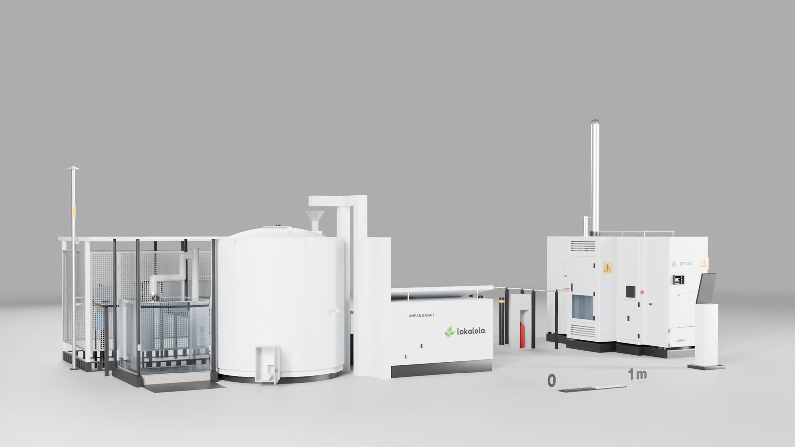
The digester, gas module, feed station, and retort stand close together. Food waste goes in at one end, char comes out at the other.
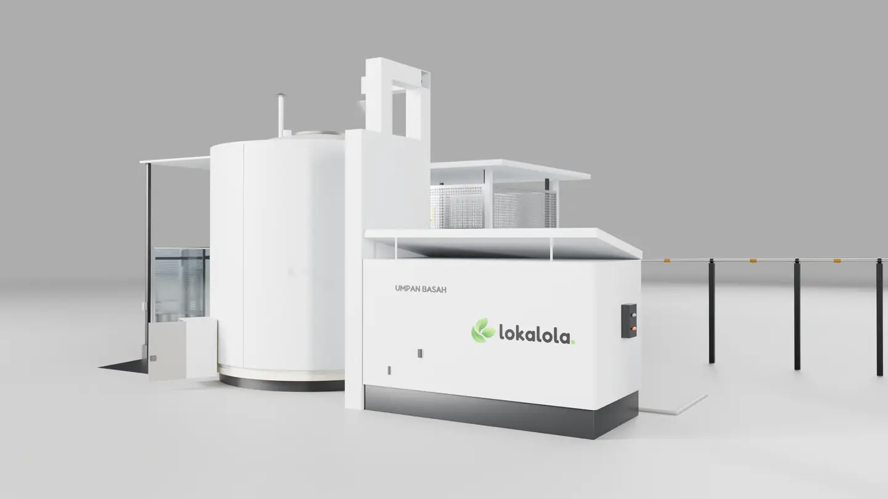
Food waste is sorted at a table, mixed with water, then lifted by a pump to the feed funnel above the digester. Target: 35 kg per day.
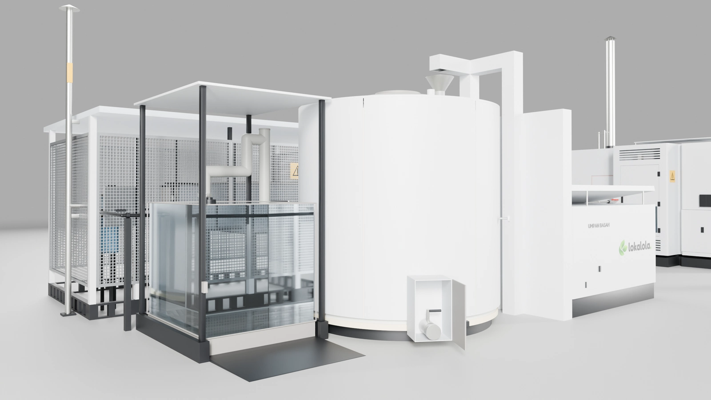
An unheated 5,000 L tank. Bacteria break food waste down without air and release biogas. Target: 1.8–2.0 m³ per day.
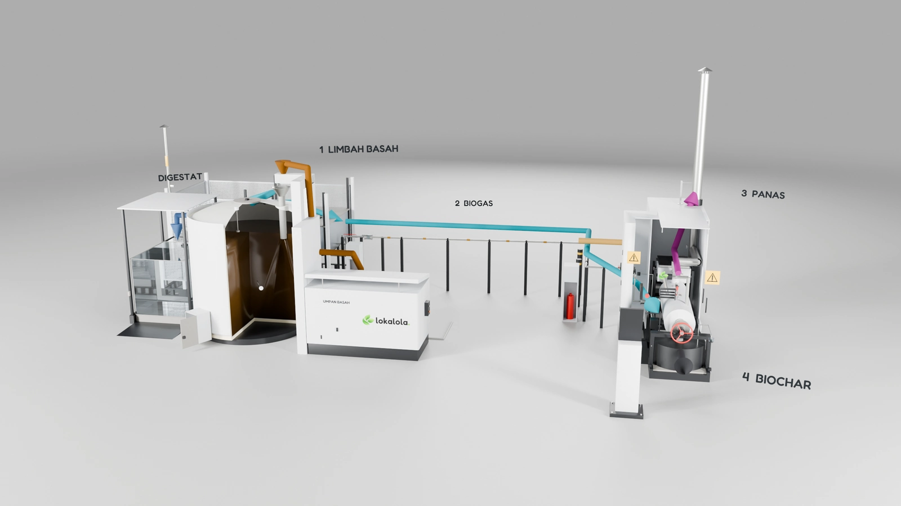
Biogas is filtered, held in a 2.5 m³ bag, then lights and preheats the retort. Once hot, vapor from the chips is designed to keep it hot (not yet tested). The B1 test answers this.
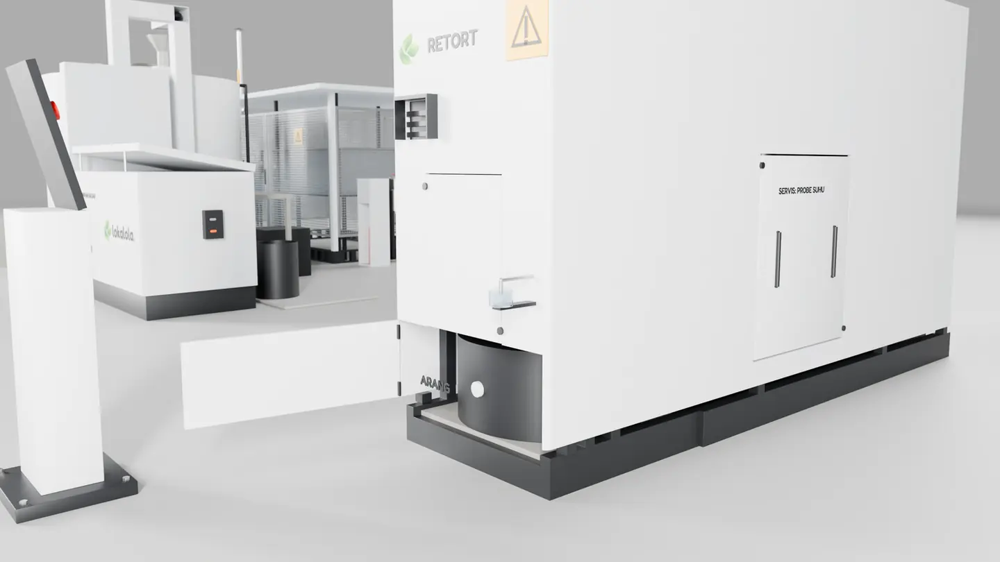
Char in a closed bin, digestate (the liquid left over from the digester) into a 1,000 L container, and leftover gas. The quality of the char and digestate has not been tested.
The hoses, trays, and liquid colors are illustrations.Explanatory view. The cutaways and flow colors are illustrations to explain, not measurements.
On to the 3D machineRotate the model and tap its seven hotspots. Shape and spacing follow the Lokalola design model.
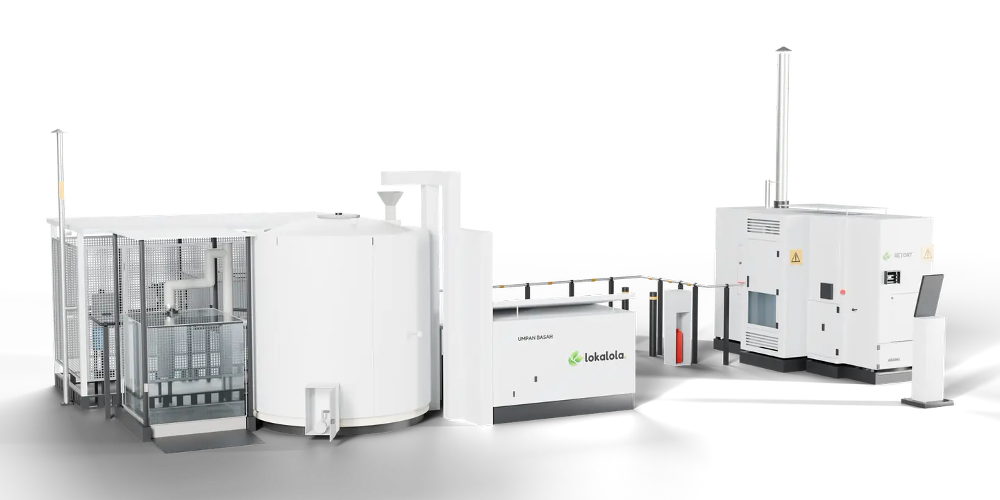
The 3D model cannot be loaded on this device. Use the list of modules below.
Gives a rough sense of the size through your phone camera. It is not a measuring tool. Equipment footprint 10.1 × 6.5 m (design).
Open this page on a phone to try AR.
Calculated estimate: about 100 minutes of work per day, excluding sludge removal, maintenance, and tasks that require two people.
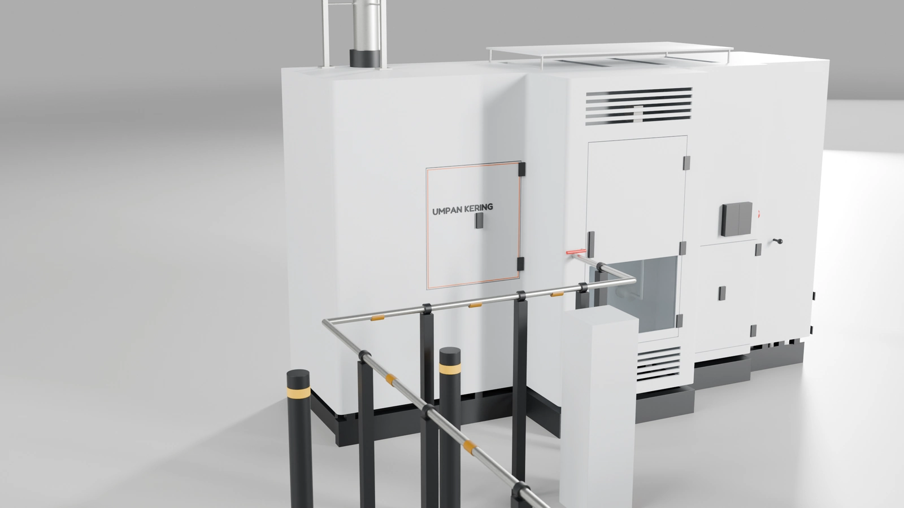
Who dries and chips the dry biomass has not been decided.
Illustrative video: wood mulch, not Lokalola chips.
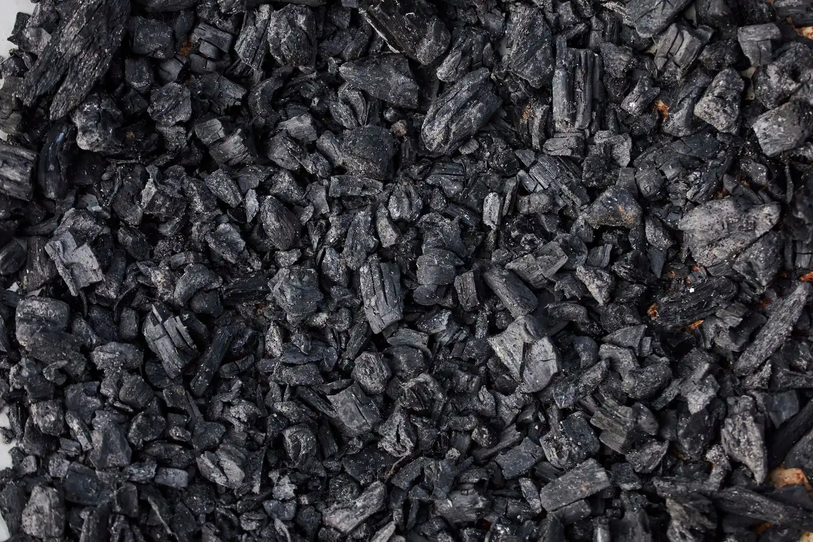
Ordinary charcoal, not Lokalola output.
Biogas is flammable. That is why the Lokalola design adds layered safeguards. All of it is still on paper and in the model.
Design features, not certification.
Measured from the model, from the ignition source (combustion chamber, burner, chimney) to the nearest gas storage and treatment equipment. Design requirement: 5 m or more. Electrical panel to the same equipment: 5.57 m. The gas line is designed to be fully welded, with a valve near the burner. Hazardous-area zones will be set only after an expert hazard review.
Red, always visible. When pressed, all gas valves close and motors and pumps stop. It restarts only through a manual reset.
A portable fire extinguisher, visible from the operator’s walkway.
A device that stops a flame from traveling back along the gas pipe. The design fits two.
A pressure-relief pole taller than 3 m, uncovered. If gas pressure rises too high, gas is released upward, away from people.
Safety is wired from ordinary electrical relays, with no software. The screen and software only display information and never loosen a safeguard.
Alarm at 20 percent of the lower flammable limit. At 40 percent, the gas valve closes automatically.
No building around the gas equipment. No gas pipes in closed channels, where gas could collect.
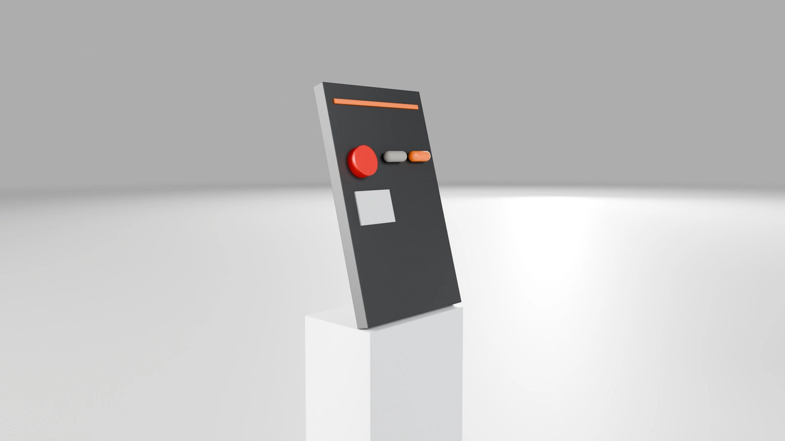
There has been no hazard review by an expert and no hazardous-area zoning yet. The feed station and its pump are inside the 5 m line, and their zoning awaits that review. Safety on this page is design intent, not the result of an inspection.
Every number is a target or a design value. No number has been measured from a real machine. The “Status” column says where each number comes from.
| Quantity | Value | Status |
|---|---|---|
| Food waste processed | 35 kg per operating dayOperating 6 days a week. | Target |
| Dry chips processed | 15 kg per day on average | Target |
| Biogas | 1.8–2.0 m³ per dayCalculated for 27–28 °C ambient air; colder sites will produce less. | Target · calculated and simulated |
| Retort session | Every two days, 30 kg per session | Design |
| Digester | 5,000 LNo heater. | Design |
| Gas bag | 2.5 m³ | Design |
| Char | About 3.8–4.5 kg per day | Calculated estimate, not measured |
| Digestate | About 65–70 L per day | Calculated estimate, not measured |
| Equipment footprint | 10.1 × 6.5 m | Design, measured from the model |
| Site with service path | About 87 m²About 11.1 × 7.9 m. | Design, measured from the model |
| Distance from the flame to the gas storage and treatment equipment | 5.62 mDesign requirement: 5 m or more. | Measured from the model |
| Chimney height | 4.34 m | Design |
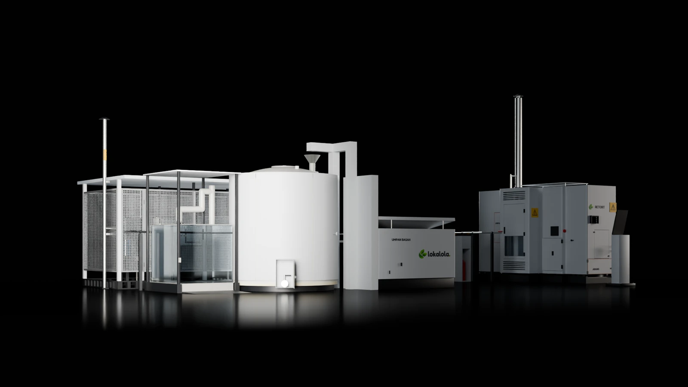
Every design number on this page describes Lokalola Pilot. We are also studying a larger facility, Lokalola Hub, with a target of 500 kg wet waste and 250 kg dry biomass per operating day. That target is a study brief. Its design, cost, and capacity are unproven, and the B1 to B5 results will not carry over to it automatically.
Planned: the retort rig will be tested in an open area, with a substitute gas standing in for biogas. It answers four questions: can the retort run on its own heat, how much gas a cold start takes, whether tar stays under control, and whether the char is good quality. Estimated time once the B1 build is ordered: final design 1 week, fabrication 2 weeks, testing 2–3 weeks.
Will be tested with real food waste from food businesses for three weeks. Target: no clogging.
Planned: quotes will be requested and the original certificates of the arrestor, gas detector, and solenoid valve will be checked.
Planned: a 2.5 m³ bag with a weight board under the canopy will be tested. Target pressure 5 mbar ± 1 mbar, including a wind test.
Planned: a pilot digester at ambient air temperature will be run. Target: biogas 1.8 m³ per day or more, and recovery after a 14-day break.
We list these up front so you do not have to guess.
Never tested, and not yet with biogas.
No hazard review or hazardous-area zoning yet. Not certified.
Materials and construction are not confirmed; awaiting supplier quotes.
Real biogas and char yields are not yet measured; awaiting B1 and B5.
No stirrer fitted; the effect on clumps and sediment has not been tested.
Spare parts, servicing, consumables, and running costs are not set.
Not yet studied.
The design assumes chips of 20 mm or smaller. Who prepares and transports them has not been decided.
Its quality and permission to use it as fertilizer have not been tested.
The mesh ventilation of the gas module, the retort skin, and the valve-room temperature await data.
Pricing has not been set, and demand has not been tested.
Volumes, waste quality, and who collects or delivers are not settled.
Quality specification, buyers, and price are not set.
City and site have not been chosen.
We are looking for food businesses and agribusinesses willing to work with us from the earliest stage. The B2 test needs real food waste, and we also need dry biomass for testing. Tell us what you throw away, how much, and where you are.
Joining the waitlist means we contact you to talk. There is no schedule and no quote yet.
We have no service or reward to promise yet. What we can offer is an open conversation about whether your waste fits.
Your email app should open with the message ready to send.
No official contact is connected yet. Copy the message below and send it yourself.
One facility, two income streams, one technical bet.
Lokalola plans to operate its own facility instead of selling units. The main income is a paid service for processing wet waste from food businesses. Selling Lokalola’s share of the biochar (two thirds of the total) is additional income, counted only when it is sold.
13 t
wet waste per month, Hub study target
6.5 t
dry biomass per month, Hub study target
2/3
of the biochar is Lokalola’s to sell; the other third goes back to agribusiness suppliers
Monthly figures: 500 kg and 250 kg per operating day over about 26 days. Targets, not results.
These are study targets for Lokalola Hub, a larger facility we are only studying. Every other design number on this page describes the Pilot. Hub is not designed, and the B1 to B5 results will not carry over to it automatically.
We still have to prove three commercial points: food businesses will pay a service fee, agribusinesses will supply dry waste for a share of the biochar, and the biochar will sell. Pricing, volumes, and returns have not been established, and we have no financial projection to share yet. Biogas, digestate, and carbon credits have not been set as income sources.
Our technical bet: that the heat from the chip vapor is enough to keep the retort running. B1 decides this.
At 5 kg of chips per hour, the main flame is turned down to a small flame, and the tube wall stays above 420 °C for at least two hours.
Target: 30 MJ or less, about 1.5 m³ of biogas. Current calculation: 32–38 MJ, so this target is a stretch.
After five sessions of 30 kg each, the vapor holes are still at least 80 percent open, the motor does not jam, and no tar clumps in the hopper.
Tested in a laboratory. Target: volatile matter 25 percent or less, and fixed carbon 65 percent or more.
Summary; the full criteria are in the B1 test plan.
If the results are poor: if Q1 narrowly fails, we raise the feed rate or add heat retention. If it fails by a wide margin, we fall back to a drum design, which would need about 45 kg of food waste per day instead of 35. That would raise the supply we need to secure.
We are seeking funding for the pilot and for research and development, starting with the B1 to B5 tests. The first question they answer is whether the retort runs on its own heat.
Could your business supply food waste or dry biomass for testing? Join the waitlist.
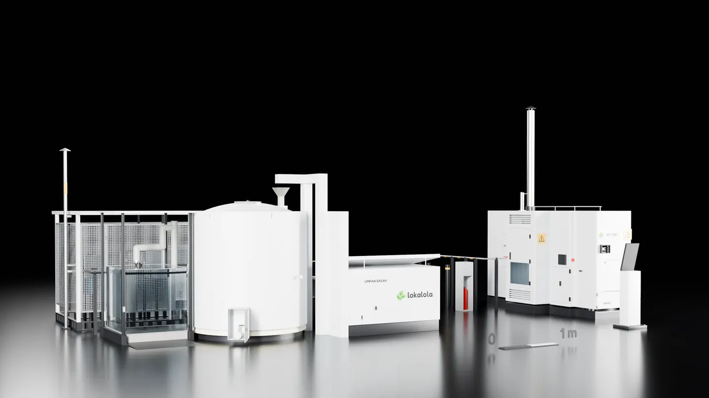
We will share the team, budget plan, and test plan as they are finalized. There are no test results yet.
No official contact is connected yet. This link will work once the owner enters the contact.